GARANTÍA DE UNA ALIMENTACIÓN SALUDABLE
Nuestro compromiso al momento de diseñar y elaborar alimentos es su inocuidad, bajo el total cumplimiento de las normas vigentes, a la vez que aportar productos con cada vez mejores perfiles nutricionales, que aborden problemáticas generales de la población.
COMPROMISO CON LA NUTRICIÓN
A lo largo de los años, hemos creado avances innovadores comprometidos con la Nutrición, que luego impulsaron a la mejora de la competencia.
Fuimos los primeros en fortificar nuestras harinas con calcio, hierro, vitamina B y ácido fólico (anticipándonos a la ley nacional que luego obligó a la competencia a adoptar la misma práctica).
Reemplazamos grasas trans y saturadas por aceite de girasol de alto oleico, rico en omega 9, 0 grasas trans y sin colesterol, en galletitas.
Reducimos sodio en productos de panadería y galletitas. Adherimos a programas gubernamentales como “-SAL, +VIDA”.
Agregamos a la Harina Integral fibra soluble prebiótica.
Elaboramos Galletitas light, reducidas en calorías, sin colesterol ni grasas trans.
Lanzamos panes congelados precocidos con alto contenido de fibra y sin grasa añadida.
Elaboramos Pan Rallado y Rebozadores, ricos en fibras, con germen de trigo, avena y calcio.
Fortificamos los Fideos con vitaminas y minerales.
Fuimos primeros en eliminar el aditivo de bromato de potasio en nuestras formulaciones.
Lanzamos una línea de productos con 0% Azúcar Agregada.
Para cumplir nuestro compromiso con la Nutrición, nos mantenemos actualizados de los avances científicos que establecen nuevas tendencias y alternativas más sanas, estamos en contacto con organismos gubernamentales que supervisan estos aspectos, y nos relacionamos con colegas y cámaras del sector. Pero por sobre todas las cosas, escuchamos permanentemente al consumidor para entender su necesidad en materia nutricional.
 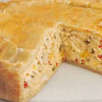
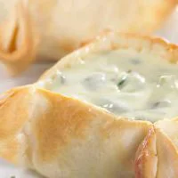
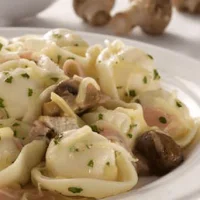
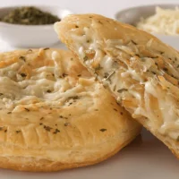
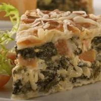
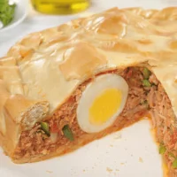
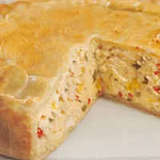
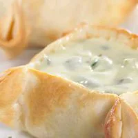
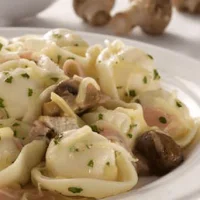
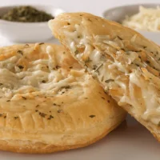
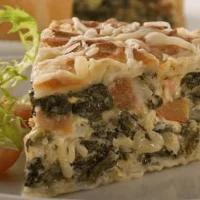
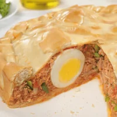